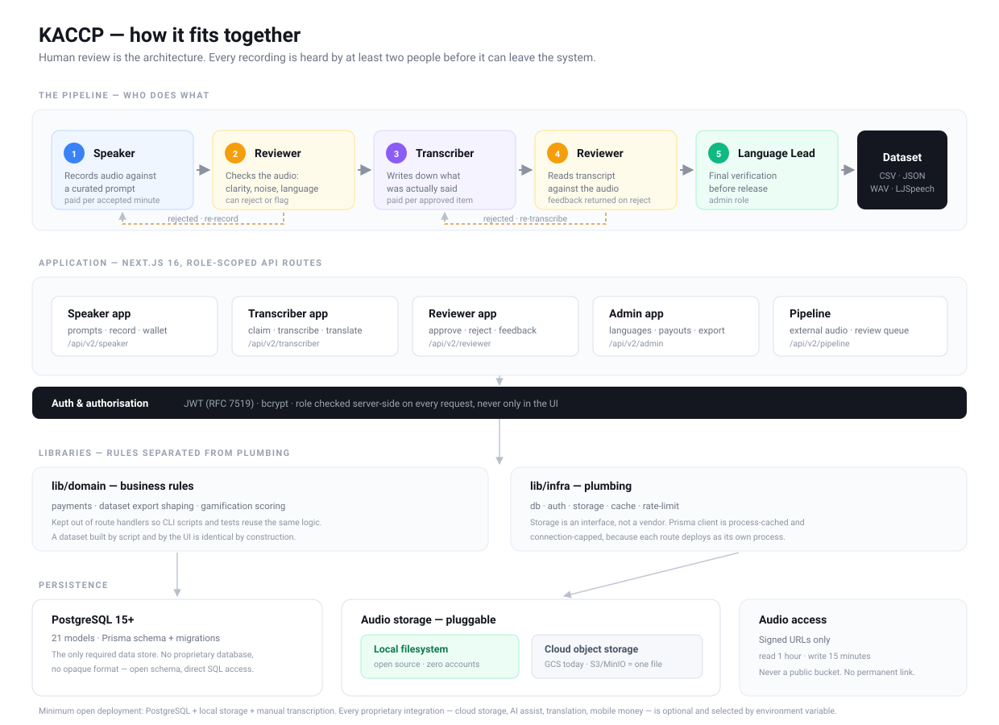

Krio Audio Corpus Crowdsourcing Platform · Application ID 14890
.env.example, Terms of Service with an enforced 18+ requirement, content
moderation policy, architecture, data dictionary, API reference, deployment guide,
replication walkthrough, DPIA and a sample export are all in the repository. Sierra Leone's
legal status is verified and the 7a wording is settled.
Most applications describe a product. The strongest framing for KACCP describes infrastructure that removes a barrier for everyone else:
Frame the beneficiary as people, not businesses. The DPG Standard is about public benefit. "Any business can collect speech data" is a commercial pitch and reads weaker here. The accurate and stronger claim is that KACCP removes the engineering barrier entirely: the reason Pular, Susu or Mandinka have no voice technology is not that nobody cares — it is that caring is not enough when you must first build a data platform. We have built it. Someone in Guinea can now start collecting on day one.
Why the software-only scope is a feature, not a hedge. A single open corpus helps the languages it covers. An open collection platform helps every language that has none — including languages we will never work in ourselves. That is a broader public good than releasing one dataset, and it is honest about how the work is funded.

Three supporting points to reuse throughout the form:
OpenMOS — your TTS Mean Opinion Score evaluator — strengthens the application, but only if it is submitted correctly. Two options:
| Option | Effect | Recommendation |
|---|---|---|
| A. One application, KACCP + OpenMOS described as a toolchain | Every indicator must hold for both codebases — licence, docs, privacy, ownership. A weakness in OpenMOS becomes a weakness in KACCP. | Only if OpenMOS is already public, MIT-licensed and documented. |
| B. Submit KACCP now; mention OpenMOS as a companion tool under Indicator 8 | KACCP is assessed on its own merits. OpenMOS still demonstrates a quality-measurement practice, which is a genuine Indicator 8 asset. | Recommended. Submit OpenMOS separately once it meets the standard. |
github.com/Geneline-X/OpenMos — public, MIT-licensed, Next.js/TypeScript/Drizzle,
deployed at open-mos.vercel.app. Inspected 23 September 2026:
| Indicator | Status | What is needed |
|---|---|---|
| 2 — Licensing | pass | MIT, OSI-approved. Nothing to do. |
| 3 — Ownership | fix | The LICENSE says “Copyright (c) 2026 Abdullah Mustapha”, not Geneline-X. KACCP claims Geneline-X ownership; an assessor comparing the two will see an inconsistency. Align the copyright holder, or state the assignment explicitly. |
| 5 — Documentation | fix | README.md is empty (0 bytes). This alone fails Indicator 5. Needs at
minimum: what MOS is and why it matters, install and run instructions, how to submit a
model for evaluation, and how scores are computed. |
| 7, 9A — Privacy | check | MOS evaluation means human listeners rating audio. If raters register, that is PII and needs a privacy policy. If ratings are linked to individuals, say so. |
| 9B, 9C | check | No CODE_OF_CONDUCT.md or SECURITY.md. KACCP’s versions can be
adapted directly. |
Submitting OpenMOS today would likely fail on the empty README alone. Citing it under Indicator 8 costs nothing and still earns the quality-loop credit.
All four items originally identified as blocking have been fixed. Recorded here with what changed, so the evidence is easy to cite on the form.
| # | Gap | Indicator | Fix |
|---|---|---|---|
| 1 | Done — scope of the open release is now explicit. Ambiguity about whether the corpus was included could have failed Indicator 2 for a claim never made. | 2 | README.md now carries a Scope and licensing section: the platform is
MIT; speech corpora belong to whoever operates the deployment; the Geneline-X Krio corpus
is proprietary. The About section was also rewritten around replication rather than
commercial use. |
| 2 | Done — repository transferred. The canonical repository is now
github.com/Geneline-X/kaccp, owned by the organisation named in
LICENSE.md. Existing README badges and CONTRIBUTING.md links
became correct on transfer. |
3 | One step remains: link back from geneline-x.net to the repository, so ownership is evidenced from both directions. See Indicator 3. |
| 3 | Done — documented setup now works. CONTRIBUTING.md instructed
cp .env.example .env against a file that did not exist, so a reviewer
following the instructions failed at step one. |
5 | .env.example created, covering all 33 variables the code reads, grouped as
Required / Storage / Workflow / Optional, each commented. The required block is four
variables; everything else is optional, which also evidences the Indicator 4
independence claim. |
| 4 | Done — minimum age published and enforced. 9C explicitly requires processes addressing underage users; nothing in the repo previously mentioned age. | 9C | TERMS.md sets a firm 18+ requirement with the reasoning (contributors
are paid and grant rights over biometric data). Both registration forms require an
explicit confirmation checkbox, and the API refuses a negative answer. |
PRIVACY.md but no ToS. 9C asks for policies;
7b asks for "privacy policy, terms of service or other relevant legal documentation".docs/krio-tts-dataset.md); extend that pattern.Which SDGs is your solution relevant to?
Select the SDG/s that are MOST relevant to your solution.
SDG 9 (Industry, Innovation and Infrastructure) · SDG 10 (Reduced Inequalities) · SDG 8 (Decent Work and Economic Growth) · SDG 4 (Quality Education)
Resist adding more. Four well-argued links score better than eight thin ones.
How is your solution relevant to each SDG you've selected above?
State in a couple of sentences the relationship to each SDG's targets.
SDG 9 (target 9.c — universal and affordable access to ICT). Sierra Leone has near-universal mobile coverage yet roughly 79% of the population is not online, and the Ministry of Communication reports a 60% usage gap despite ~$400m of telecoms investment and a fibre backbone reaching 14 of 16 districts. The barrier is no longer infrastructure but interface: services exist only in English. KACCP is the infrastructure that lets a service be operated by voice in a language people already speak, converting existing connectivity into usable access — and because it is open source, the community that speaks a language can build that capability themselves rather than waiting for a vendor to decide the market is large enough.
SDG 10 (target 10.2 — social, economic and political inclusion of all). About 96% of Sierra Leoneans speak Krio but only about half of adults can read and write a simple sentence, so text-based, English-only digital services systematically exclude the majority. Globally, 88% of languages are unsupported by language technology. KACCP is explicitly built for languages that commercial providers will never serve, because the barrier it removes is engineering capacity, not commercial interest. A university department, a community organisation or a group of speakers in any country can deploy it and begin collecting for their own language on day one. It is already configured for Krio, Mende, Temne, Susu and Mandinka.
SDG 8 (target 8.5 — full and productive employment and decent work). Contributors are not unpaid volunteers. Speakers and transcribers earn per minute of accepted audio and per approved transcription, paid through Orange Money, with transparent per-language rates, a wallet ledger and a documented review process determining what is accepted. This creates paid remote digital work whose only qualification is fluency in one's own language — work that did not previously exist, in places where formal employment is scarce. The platform also includes a contributor progression and recognition system, because sustained participation, not initial sign-up, is what determines whether a corpus ever reaches usable size.
SDG 4 (target 4.6 — youth and adult literacy and numeracy). Where literacy is the binding constraint, voice interfaces let people use services they currently cannot read. KACCP supplies the corpus such interfaces require, so a health hotline, agricultural advisory or government information line can be operated by speech rather than text.
Which open license(s) is/are used by your solution?
If you do not currently use one of the approved licenses, your solution cannot be approved as a DPG.
MIT — OSI-approved, already in LICENSE.md, covering the entire KACCP
platform: application source, database schema, migrations, export tooling and documentation.
Provide evidence of use of the selected open license(s).
Link(s) to public pages where the licences are hosted.
https://github.com/Geneline-X/kaccp/blob/master/LICENSE.md — MIT,
"Copyright (c) 2026 Geneline-X"package.json → "license": "MIT"## Scope and licensing **The KACCP platform is open source under the MIT licence.** Anyone may deploy, modify and operate it, including commercially, for any language. **Speech corpora are not part of this release.** Audio and transcriptions collected through a KACCP deployment belong to whoever operates that deployment and are licensed by them. The corpus Geneline-X has collected for Krio is proprietary: contributors were compensated for their work under agreements specific to that programme. We open-source the means of collection, not our dataset — so that any organisation can build a corpus for a language that has none, on the same terms we built ours.
This paragraph does real work. It converts a potential Indicator 2 objection into a clear statement of a legitimate commercial model, and it reinforces the replication story that is the core of your SDG argument.
The same ambiguity sits in your public copy, and an assessor may read geneline-x.net before the repository. Change the beneficiary from businesses to people:
| Currently reads | Change to |
|---|---|
| "We are open-sourcing KACCP so any business, researcher or public service can collect high-quality speech data and train language models for their own products." | "We are open-sourcing KACCP so that anyone — a university department, a community organisation, a ministry, or a group of speakers determined to see their language online — can collect high-quality speech data for a language that has none, without first having to build the platform to do it." |
Two gains at once: it removes the "is the data open?" ambiguity, and it states a public-benefit case rather than a commercial one, which is what the DPG Standard is assessing.
The repository currently ships content files — prompts_batch_*.csv,
metadata.csv, dpg-results.json. Under an MIT repo these are MIT-licensed
by implication. That is acceptable (you authored the prompts), but confirm two things:
git log --all --name-only before submitting — a
reviewer may clone and look, and a stray export file would contradict both your privacy
answers and your licensing scope.github.com/Geneline-X/kaccp.
The organisation name, the copyright line in LICENSE.md, the
package.json author field and the company website now all name the same owner. That
is about as clean as Indicator 3 evidence gets, and the README badges that previously pointed
nowhere are correct as a result.
Who owns this digital solution?
Geneline-X, Freetown, Sierra Leone.
Provide evidence(s) of ownership.
LICENSE.md — "Copyright (c) 2026 Geneline-X"MAINTAINERS.md naming Geneline-X as primary maintainerpackage.json author field: Geneline-X <info@geneline-x.net>https://geneline-x.netGeneline-X/kaccpCONTRIBUTING.md
already point at Geneline-X/kaccp — after the transfer they become correct.
Click each one before submitting; an assessor certainly will.github.com/Geneline-X/kaccp from
geneline-x.net as "our open source platform". A public company page naming the repository
is the strongest ownership evidence available short of a registration document, because
only the company controls that page.MAINTAINERS.md already names Geneline-X as
primary maintainer. Add the individual maintainer and state they act on behalf of
Geneline-X, which holds copyright.Resulting evidence chain, all pointing the same way: organisation-owned repository →
LICENSE.md "Copyright (c) 2026 Geneline-X" → package.json author →
MAINTAINERS.md → geneline-x.net linking back to the repo → business registration.
Type of organisation · Where is the owner based?
Private company (for-profit) · Sierra Leone.
Being a for-profit is not a disadvantage. The DPG registry includes many; what matters is that the good itself is openly licensed.
Do you own all of the code, content and/or data in this solution?
For open content collections and open datasets, indicate whether all content/data is owned/licensed by the owner indicated above.
Yes. Suggested wording:
"Geneline-X owns all source code, database schema, documentation and prompt content in this repository. All code is original work by Geneline-X or incorporated third-party open-source dependencies under their respective permissive licences. Prompt banks are originally authored by Geneline-X and contain no third-party copyrighted material.
Speech corpora collected using the platform are not part of this submission. Audio and transcriptions collected through a KACCP deployment are owned by the operator of that deployment. Geneline-X's own Krio corpus is proprietary and separately licensed; contributors were compensated for their work and granted Geneline-X rights to the material under programme-specific agreements."
This is a genuine strength: the codebase already abstracts its closed dependencies behind provider interfaces with working open implementations.
Which are the core technologies your solution depends on?
Next.js 16 · React 19 · TypeScript · PostgreSQL 15+ · Prisma ORM · Tailwind CSS · Node.js 20+. All open source. PostgreSQL is the only required data store; no proprietary database.
Does this solution use any closed components that create proprietary dependency?
No — every closed service is optional and swappable. Detail in 4c.
How can these closed component(s) be replaced with open alternative(s)?
| Closed service | Role | Open alternative & how to switch |
|---|---|---|
| Google Cloud Storage | Audio storage | Already abstracted. src/lib/infra/storage/provider.ts defines the
interface; local-provider.ts ships a filesystem implementation. Set
STORAGE_PROVIDER=local. MinIO or any S3-compatible store slots in by adding
one provider file — no changes elsewhere. |
| Orange Money | Contributor payouts | Payment records are plain database rows (Payment,
WalletTransaction). Operators may settle by any means — bank transfer, cash,
another mobile-money provider — and mark payments settled. Payout is not on the critical
path for data collection. |
| OpenAI API | Optional transcription assist | Optional convenience only. Omit OPENAI_API_KEY and the platform runs as a
fully manual transcription workflow. Any OpenAI-compatible endpoint (vLLM, Ollama,
LocalAI) works by changing the base URL, as does Whisper self-hosted. |
| Google Translate | Optional UI translation | Already abstracted. src/lib/translation-providers/ carries multiple
implementations selected by TRANSLATION_PROVIDER; LibreTranslate can be added
as a provider. Feature is optional. |
| UploadThing | Optional browser upload helper | Superseded by the storage abstraction above; local and signed-URL paths do not require it. |
Closing line: "A complete, functional KACCP deployment is possible using only open-source components: PostgreSQL for data, local or MinIO storage for audio, and manual transcription. Every proprietary integration is an optional enhancement selected by environment variable."
Where is your solution's documentation?
Developer docs, technical architecture, user guides, data dictionaries, metadata.
README.md — overview, features, install, usageCONTRIBUTING.md — local setup, workflow, PR guidelinesdocs/krio-tts-dataset.md — dataset spec, validation script, known gaps
(a genuinely strong artifact — reviewers like reproducibility)docs/pipeline-integration.mddocs/images/architecture.svg — system diagram (scalable, embedded
in the architecture doc and in this pack)docs/architecture.md — pipeline diagram, role model, data model,
request lifecycle, directory layout, and how to run with no proprietary componentsdocs/data-dictionary.md — every exported field with type,
nullability and meaning; all enumerations; which fields are PII and never publisheddocs/adapting-to-a-new-language.md — the replication walkthroughdocs/api.md — every endpoint, auth model, roles, export APIdocs/deployment.md — production deploy, migrations, connection
budget, security checklist, and a fully open configuration using no proprietary servicedocs/dpia.md — Data Protection Impact Assessment for voice as
biometric datadocs/sample-export.csv — anonymised sample of the dataset formatdocs/content-moderation.md — prohibited content, detection,
removal, escalationTERMS.md — Terms of Service, including the 18+ requirement.env.example — all 33 configuration variables, documentedSECURITY.md, CODE_OF_CONDUCT.md, MAINTAINERS.md,
PRIVACY.md.env.example are all in the repository, plus a sample export as concrete evidence.Does your solution collect, use or generate non-PII data and/or content?
Yes.
Describe the mechanism for extracting or importing non-PII data in a non-proprietary format.
Answer with specifics — this indicator is easy to pass and easy to underclaim:
text/csv) and JSON export via the admin export API,
also available in the web UI. Fields: audio path, speaker label, target-language transcript,
English text, duration, transcript provenance, category, language.wavs/ plus
metadata.csv, the standard interchange format for speech-synthesis training,
readable by every major TTS toolkit.scripts/export-krio-dataset.ts) for reproducible,
scriptable dataset builds independent of the web UI.kri_speaker_0018), never names, emails or phone numbers. The exported corpus
contains no direct PII.Evidence attached: docs/sample-export.csv — 10 anonymised rows showing the exact format, including a row with empty target-language text to show the nullable case, and Krio orthography (ɔ, ɛ, ŋ) to show UTF-8 handling. Field definitions in docs/data-dictionary.md.
Provide a list of relevant privacy, domestic and other applicable international laws your solution complies with.
| Law / framework | Status & relevance |
|---|---|
| Sierra Leone Data Protection and Right to Access Information Bill | Not yet in force — checked 23 September 2026. Completed national validation November 2025; Cabinet approved the national Data Protection Policy and authorised drafting of the Act in April 2026. No evidence of parliamentary passage or presidential assent. Describe as "aligned with", never "compliant with". |
| Sierra Leone Cyber Security and Crime Act, 2021 | In force. Governs computer misuse, data security obligations and illegal content. |
| EU GDPR (2016/679) | Applied as the design baseline, and binding where EU-based researchers or contributors use the platform. Voice handled as Article 9 biometric data. |
| AU Convention on Cyber Security and Personal Data Protection (Malabo, 2014) | Regional framework; the Sierra Leone bill is drafted to align with it. |
Provide evidence(s) of adherence with the laws mentioned above.
PRIVACY.md — lawful basis per data type, biometric handling, retention,
subject rights (already well written; this is a strength)SECURITY.md — vulnerability disclosure, 48-hour acknowledgement, 90-day
coordinated disclosuredocs/dpia.md — Data Protection Impact Assessment covering voice as
biometric data, consent under economic asymmetry, re-identification risk, minors, and
the payment channelProvide a list of the open standards your solution adheres to and demonstrate adherence.
| Standard | How KACCP adheres |
|---|---|
| ISO 639-3 language codes | Languages keyed by ISO 639-3 (kri, men, tem,
sus, man) — see the Language model. |
| ISO 3166-1 alpha-2 country codes | Country.code (e.g. SL). |
| RIFF/WAVE (PCM) audio | 16 kHz mono target; uncompressed, non-proprietary. |
| LJSpeech dataset convention | Export produces wavs/ + metadata.csv, the de-facto TTS
interchange layout. |
| RFC 4180 CSV | Exports quote and escape per RFC 4180 — necessary because transcripts contain commas. |
| ISO 8601 timestamps · JSON · HTTP/REST · JWT (RFC 7519) | Throughout the API surface. |
| Unicode / UTF-8 | Required for Krio orthography (ɔ, ɛ, ŋ); exports are UTF-8 end to end. |
| WCAG 2.1 accessibility | Semantic HTML, keyboard navigation, prefers-reduced-motion respected.
State the conformance level you can honestly claim. |
Provide a list of best practices & principles your solution adheres to and demonstrate adherence.
| Practice | Evidence |
|---|---|
| Principles for Digital Development | Design with the user (built in Sierra Leone with Krio speakers); Reuse and improve (open source, language-agnostic); Build for sustainability (contributors paid); Use open standards, open data, open source; Address privacy and security. |
| FAIR data principles | Findable (public dataset docs), Accessible (CSV/JSON/WAV export), Interoperable (ISO codes, LJSpeech, RFC 4180 CSV, PCM WAV), Reusable (MIT platform; exports carry documented provenance and transcript source so downstream users know what they have). |
| Documented quality control | Multi-stage review: audio review → transcription → reviewer approval → language-lead verification, with rejection feedback returned to the contributor. Dataset exports record transcript provenance and exclude failed-QC audio. |
| Dataset integrity verification | docs/krio-tts-dataset.md ships a validation script that confirms every
exported path resolves to readable audio, plus an automated prompt-to-transcript
agreement check that detects mislinked records. |
| Model quality evaluation — OpenMOS | Companion open-source tool (MIT) computing Mean Opinion Score for TTS models trained
on KACCP-collected data, closing the loop from collection to measured output
quality:https://github.com/Geneline-X/OpenMos · live at
open-mos.vercel.appCollecting data is only half of a quality claim; being able to measure whether the resulting model actually sounds good is the other half. |
| Ethical data collection | Informed consent per session; fair per-minute compensation; anonymous speaker labels in all published data; right to withdraw and delete. |
| Semantic Versioning · Conventional Commits · CI | CONTRIBUTING.md; GitHub Actions workflow. |
Does your solution allow the collection / storage / distribution of PII data?
Select: "PII data can be collected and stored but NOT distributed."
This is accurate and defensible: PII is collected and stored for accounts and payment, but the published corpus uses anonymous speaker labels and contains no names, emails or phone numbers. Say that explicitly — it is a strong design point.
Note honestly that voice itself is biometric and is published as part of the corpus, under explicit consent naming the licence. Do not hide this; an assessor who finds it unstated will treat everything else with suspicion.
What are the types of data that can be collected / stored / distributed?
| Data | Purpose | Published? |
|---|---|---|
| Email address | Authentication, notifications | No |
| Phone number | Identification, Orange Money payout | No |
| Display name | Profile, in-platform attribution | No |
| Password (bcrypt hash) | Authentication | No |
| Voice recordings (biometric) | Corpus — core function | Yes, under explicit consent, with anonymous speaker labels |
| Transcription text | Corpus — core function | Yes |
| Payment amounts, wallet balances | Contributor compensation | No |
| IP address (server logs) | Security, abuse prevention | No |
How does your solution ensure data privacy & security?
1 — Data minimisation. Only what payment and authentication require: email, phone, display name. No address, date of birth, government ID, gender or demographic profiling. Speaker metadata in the corpus is reduced to an opaque label.
2 — Consent mechanism. Explicit consent at registration and reconfirmed before each
recording session, stating what the recording will be used for and who will hold it.
Consent is recorded per recording (consentGiven), not assumed once.
Ensure the consent wording matches your actual practice — that recordings are
retained by the deployment operator for building speech datasets — and does not promise open
publication.
3 — Transparency of use and access. PRIVACY.md states what is collected,
the lawful basis for each item, how it is used, who can access it and what is published. Roles are
least-privilege: transcribers see audio and text but not contributor contact details or payment
records; only administrators access PII.
4 — Privacy by design. Pseudonymisation is structural, not a post-processing step: exports are generated from anonymous speaker labels, so publishing personal data would require deliberately changing the export code. Audio is served only through short-lived signed URLs (1 hour read, 15 minutes write) — no public bucket, no permanent link.
5 — Retention and deletion. State your retention period explicitly — e.g. account data retained while the account is active plus N months. Contributors may delete their account, which removes their PII. Because corpora are not published openly, deletion is genuinely effective here: there are no downstream public copies to recall. Where a dataset has already been delivered to a partner, say so plainly and describe what the agreement requires of them. Disclose the position before consent is given rather than leaving it to be discovered.
6 — Governance and access control. Role-based access (Speaker, Transcriber, Reviewer,
Language Lead, Admin) enforced server-side on every request, not merely hidden in the UI.
Passwords hashed with bcrypt; sessions via signed JWTs; all traffic over TLS; database access
restricted to the application with credentials held in environment configuration; object storage
private with no anonymous access. Vulnerability reporting and disclosure timelines in
SECURITY.md.
Does your solution allow the collection / storage / distribution of content?
Select: "Content is collected and stored but NOT distributed."
Accurate for the platform as submitted: KACCP has no public publishing surface. Recordings and transcripts are visible only to authenticated users holding the relevant role within a deployment, and dataset export is restricted to administrators. Nothing is served to the open internet.
What are the types of content that can be collected / stored / distributed?
Audio recordings of speech in the target language; text transcriptions of that speech; English translations of the transcriptions; prompt text authored by Geneline-X.
How does your solution handle inappropriate, misleading and illegal content?
Describe (1) mechanisms for identifying such content and (2) processes for detecting, moderating, reporting and removing it.
Link to docs/content-moderation.md, which documents everything below.
Structural prevention. KACCP is prompt-driven, not open submission: speakers record responses to a curated prompt bank authored by Geneline-X, so the content space is bounded by design. There is no free-text public posting, no user-to-user messaging and no file upload of arbitrary media.
Detection. Every recording passes human review before it can enter a dataset.
Transcribers and reviewers can flag any clip with a reason —
NOISE, UNCLEAR, TOO_QUIET, WRONG_LANGUAGE,
INCOMPLETE, OTHER — which removes it from the working queue and routes
it to an administrator. An INAPPROPRIATE reason has been added for content breaches, so the flag list
names harmful content rather than only quality problems.
Multi-stage moderation. Audio review → transcription → reviewer approval → language-lead verification. Content reaches a published dataset only after clearing every stage; anything rejected or flagged is excluded from export by default.
Removal. Administrators can reject or delete any recording. Rejected and flagged audio
is programmatically excluded from dataset exports (the export tooling drops
REJECTED and FLAGGED records by default), so removal at source is
sufficient — there is no separate publication path to police.
Reporting. Illegal content, including CSAM, is reported to Sierra Leone Police and the relevant authority under the Cyber Security and Crime Act 2021, and the contributing account is suspended. Public reporting channel: info@geneline-x.net. The escalation table is in the policy document.
Does your solution facilitate or enable interactions with or between users and/or contributors?
Yes — but limited, and say so. There is no direct messaging, no public profiles and no social feed. Interaction is confined to structured, one-directional workflow feedback: a reviewer may return written notes to a transcriber explaining why work was rejected. Contributors cannot contact one another.
Answering "yes" with a tightly-scoped description is far stronger than answering "no" and having an assessor find the review-feedback feature.
How does your solution enable users and contributors to protect themselves from harassment?
Describe (1) policies such as a code of conduct and (2) processes that address the safety and security of underage users.
CODE_OF_CONDUCT.md — Contributor Covenant 2.1; explicitly prohibits harassment,
trolling, insults and publishing others' private information; enforcement contact
info@geneline-x.net; confidentiality for reporters.User.isActive), immediately revoking access.TERMS.md §1, restated in PRIVACY.md §6 and the Code
of Conduct, and enforced in both registration forms with a required confirmation. The
reasoning is stated rather than asserted:
All figures below were queried directly from the production database on 23 September 2026. Report what you can evidence — an assessor can and sometimes does ask.
| Measure | Figure | Note |
|---|---|---|
| Recordings collected | 15,392 | across 4 languages |
| Audio collected | 50.0 hours | total recorded |
| Audio fully approved | 8.8 hours | cleared every review stage |
| Transcriptions submitted | 2,920 | 2,830 approved (97%) |
| Registered users | 64 | 30 speakers · 34 transcribers · 3 admins |
| Contributors who have produced work | 16 speakers · 18 transcribers | Report this alongside registrations. It is the honest number, and 34 active contributors in a pilot is a credible figure |
| Contributor earnings paid out | 1,819.83 | platform currency |
| External audio processed | 941 items | pipeline queue: 153 approved, 82 corrected, 676 pending, 30 rejected |
| Measure | Figure |
|---|---|
| Collection window | 19 Dec 2025 – 1 May 2026 (133 days) |
| Active collection days | 66 |
| Mean recordings per active day | 233 |
| Best single day | 1,427 recordings |
| Mean transcriptions per active day | 49 (best day 279) |
233 recordings a day sustained, peaking at 1,427, is the number that demonstrates this is an operating system rather than a prototype. Lead with it.
| Language | ISO 639-3 | Recordings | Status |
|---|---|---|---|
| Krio | kri | 10,282 | primary corpus |
| Fulani / Pular | ful | 4,723 | active collection |
| Temne | tem | 271 | early |
| Madingo | mad | 116 | early |
| Mende · Susu · Mandinka · Wolof | men sus man wol | 0 | configured, no data |
Deployment. One production deployment, operated by Geneline-X in Sierra Leone, in continuous use since December 2025.
Reach. 64 registered users — 30 speakers, 34 transcribers — of whom 34 have produced accepted work. Contributors are paid per accepted contribution through Orange Money.
Volume. 15,392 recordings totalling 50 hours of audio, and 2,920 transcriptions of which 2,830 were approved, across four languages. A further 941 items of externally-captured audio have been processed through the correction pipeline.
Throughput. Over 66 active collection days the platform sustained a mean of 233 recordings per day, peaking at 1,427 in a single day.
Downstream use. A Krio ASR/TTS model trained on KACCP-collected data is deployed in production behind Flot Chat, which understands Krio voice notes sent over WhatsApp. A further 200 hours of Krio speech is in collection with the Masakhane Foundation for open release.
Replication. Language, country, prompt bank and payment rates are configuration rather than code. Eight languages are configured and four are in active collection, including Fulani, which is spoken across Guinea, Senegal and Mali — so the platform is already demonstrated beyond a single language and a single country.
| # | Action | Indicator | Priority |
|---|---|---|---|
| 1 | 2 | done | |
| 2 | Geneline-X org | 3 | high |
| 3 | .env.example | 5 | done |
| 4 | 9C | done | |
| 5 | TERMS.md | 7, 9C | done |
| 6 | INAPPROPRIATE flag | 9B | done |
| 7 | docs/architecture.md and docs/data-dictionary.md | 5 | done |
| 8 | docs/adapting-to-a-new-language.md | 5, 1 | done |
| 9 | metadata.csv containing one live transcript, a speaker id and a name | 2, 9A | done |
| 10 | 7 | done | |
| 11 | PRIVACY.md | 9A | done |
| 12 | 9C | done | |
| 13 | docs/api.md and docs/deployment.md | 5, 6 | done |
| 14 | docs/dpia.md: 7 risks assessed, R1 re-identification recorded as inherent and disclosed | 9A | done |
| 15 | docs/sample-export.csv: 10 anonymised rows incl. the nullable-text case and Krio orthography | 6 | done |
| 16 | github.com/Geneline-X/OpenMos. Separate submission blocked on an empty README and a copyright holder that is not Geneline-X | 8 | done |
| 17 | Scale | done |